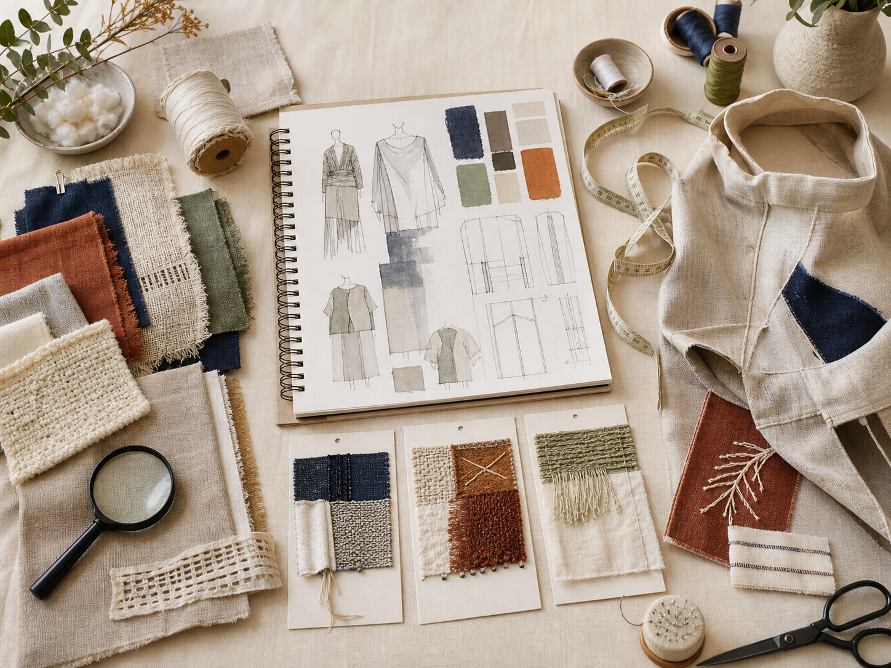

Year 12 HSC · learning and process record
My textiles folio
Collect the thinking and evidence that show how your HSC learning and Major Textiles Project decisions develop. Save locally, explain what each record proves and keep a backup.
← Return to the course
Evidence first
Collect, explain and protect your work
This is a learning and process scaffold. It does not replace the formal MTP supporting documentation, a teacher-issued assessment task or the approved submission channel.
- CollectAdd a decision, result, source record or teacher-authorised photo.
- ExplainState what the evidence proves and how it influenced the next decision.
- Back upDownload the editable backup before changing device or browser.
Your browser-local record
Saving and progress
No student details entered
10 cards are blank.
Saved on this browser and device: this page does not upload to Google Drive or submit to Google Classroom. The editable JSON backup can include your text and locally added photos. Print / Save PDF creates a readable learning copy, not proof of submission or practical competence.